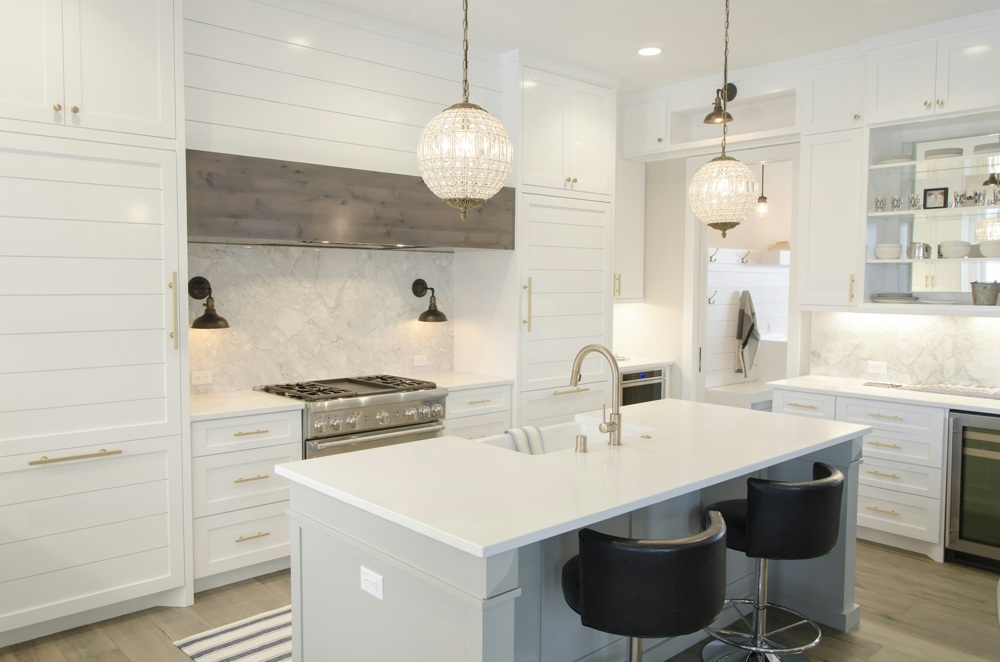

Atendimento pessoal, discreto e sem pressa, para quem procura uma casa à altura da própria história.
Corretor de imóveis em Belém e Ananindeua, CRECI 9493, dedicado exclusivamente à venda de casas de médio e alto padrão em condomínios fechados. Cada visita é agendada de forma privativa e cada negociação conduzida com total sigilo.
Conversar com Fábio